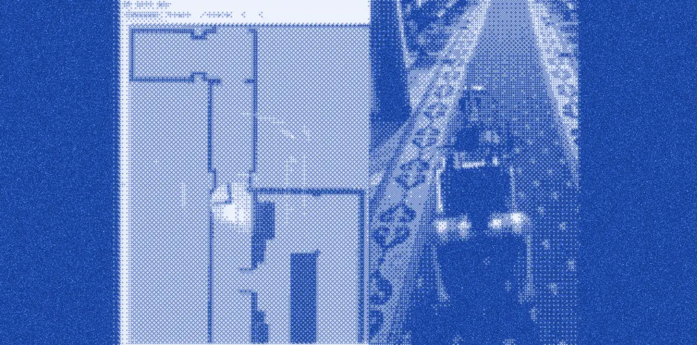

A Unitree Go2 quadruped inspects a building on its own.
Inspection points are chosen in a web interface. The robot orders them from nearest to farthest and plans a path.
It checks ceiling lights (working, or only half working), confirms a fire extinguisher is in place, and looks for cracks in a wall.
Then it calls the lift:
- aligns itself to an AprilTag
- presses the call button with a rod on a small servo arm
- docks inside
- presses the floor button
- exits on the destination floor
A report is generated in the web interface and can be saved as PDF.